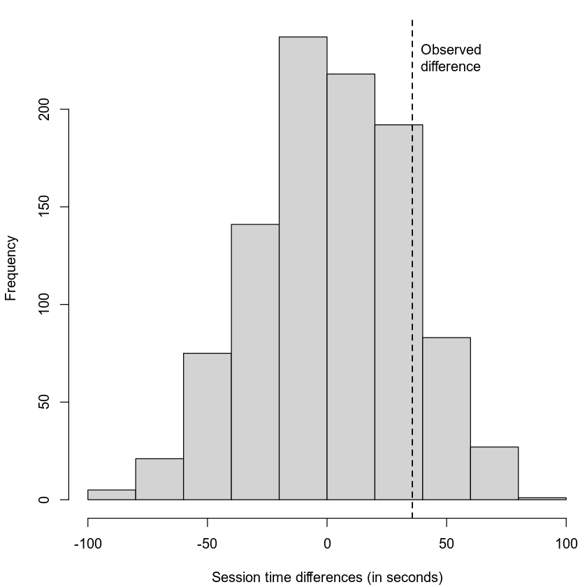
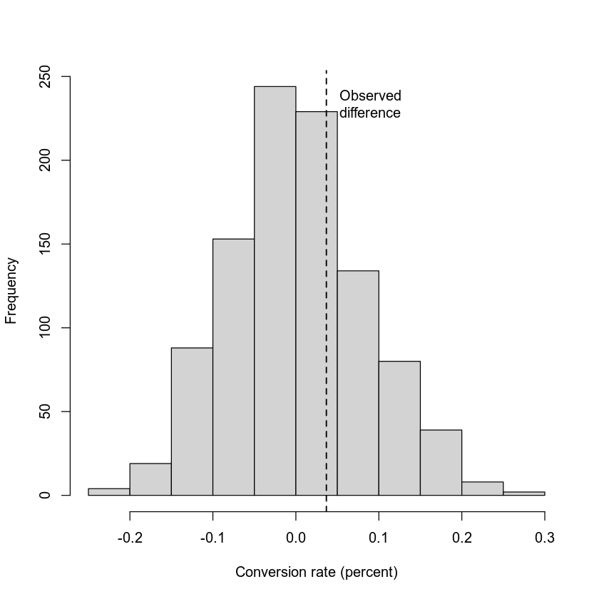
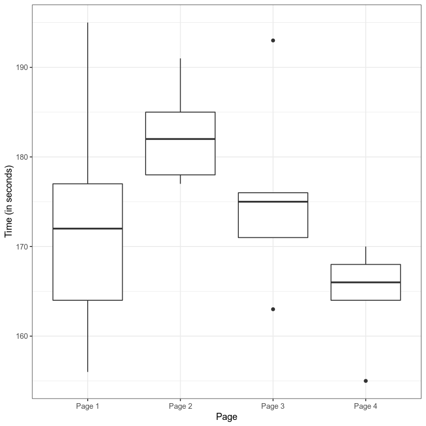
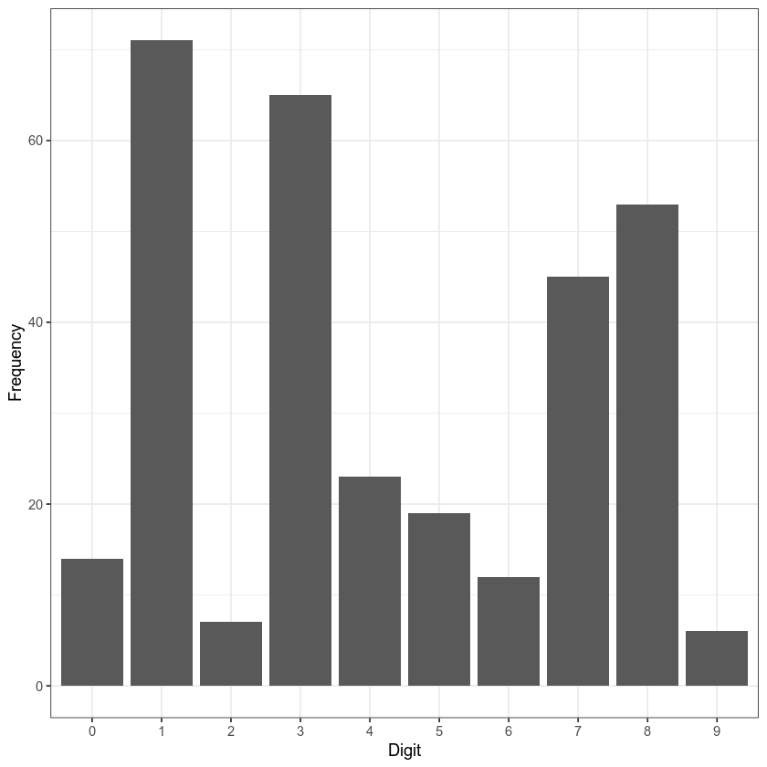

# lmPerm is available from CRAN
# conda install r-devtools
# devtools::install_github('mtorchiano/lmPerm')Chapter 3 - Statistial Experiments and Significance Testing
Practical Statistics for Data Scientists (R)
- 2019 Peter C. Bruce, Andrew Bruce, Peter Gedeck
Import required R packages.
library(ggplot2)
library(dplyr)
library(lmPerm)
library(pwr)Warning message:
“package ‘dplyr’ was built under R version 4.1.2”
Attaching package: ‘dplyr’
The following objects are masked from ‘package:stats’:
filter, lag
The following objects are masked from ‘package:base’:
intersect, setdiff, setequal, union
Define paths to data sets. If you don’t keep your data in the same directory as the code, adapt the path names.
PSDS_PATH <- file.path(dirname(dirname(getwd())))
session_times <- read.csv(file.path(PSDS_PATH, 'data', 'web_page_data.csv'))
session_times[,2] <- session_times[,2] * 100
four_sessions <- read.csv(file.path(PSDS_PATH, 'data', 'four_sessions.csv'))
click_rate <- read.csv(file.path(PSDS_PATH, 'data', 'click_rates.csv'))
imanishi <- read.csv(file.path(PSDS_PATH, 'data', 'imanishi_data.csv'))Resampling
Example: Web Stickiness
graph <- ggplot(session_times, aes(x=Page, y=Time)) +
geom_boxplot() +
labs(y='Time (in seconds)') +
theme_bw()
graph
mean_a <- mean(session_times[session_times['Page'] == 'Page A', 'Time'])
mean_b <- mean(session_times[session_times['Page'] == 'Page B', 'Time'])
mean_b - mean_a
35.6666666666667
## Permutation test example with stickiness
perm_fun <- function(x, nA, nB)
{
n <- nA + nB
idx_b <- sample(1:n, nB)
idx_a <- setdiff(1:n, idx_b)
mean_diff <- mean(x[idx_b]) - mean(x[idx_a])
return(mean_diff)
}set.seed(1)
perm_diffs <- rep(0, 1000)
for (i in 1:1000) {
perm_diffs[i] = perm_fun(session_times[, 'Time'], 21, 15)
}
par(mar=c(4,4,1,0)+.1)
hist(perm_diffs, xlab='Session time differences (in seconds)', main='')
abline(v=mean_b - mean_a, lty=2, lwd=1.5)
text(' Observed\n difference', x=mean_b - mean_a, y=par()$usr[4]-20, adj=0)
mean(perm_diffs > (mean_b - mean_a))
0.141
Statistical Significance and P-Values
obs_pct_diff <- 100 * (200 / 23739 - 182 / 22588)
conversion <- c(rep(0, 45945), rep(1, 382))
perm_diffs <- rep(0, 1000)
for (i in 1:1000) {
perm_diffs[i] = 100 * perm_fun(conversion, 23739, 22588)
}
hist(perm_diffs, xlab='Conversion rate (percent)', main='')
abline(v=obs_pct_diff, lty=2, lwd=1.5)
text(' Observed\n difference', x=obs_pct_diff, y=par()$usr[4]-20, adj=0)
# Obbserved difference
obs_pct_diff
0.0367579118205928
P-Value
mean(perm_diffs > obs_pct_diff)
0.34
prop.test(x=c(200,182), n=c(23739,22588), alternative='greater')
2-sample test for equality of proportions with continuity correction
data: c(200, 182) out of c(23739, 22588)
X-squared = 0.14893, df = 1, p-value = 0.3498
alternative hypothesis: greater
95 percent confidence interval:
-0.001057439 1.000000000
sample estimates:
prop 1 prop 2
0.008424955 0.008057376 t-Tests
t.test(Time ~ Page, data=session_times, alternative='less')
Welch Two Sample t-test
data: Time by Page
t = -1.0983, df = 27.693, p-value = 0.1408
alternative hypothesis: true difference in means between group Page A and group Page B is less than 0
95 percent confidence interval:
-Inf 19.59674
sample estimates:
mean in group Page A mean in group Page B
126.3333 162.0000 ANOVA
graph <- ggplot(four_sessions, aes(x=Page, y=Time)) +
geom_boxplot() +
labs(y='Time (in seconds)') +
theme_bw()
graph
library(lmPerm)
summary(aovp(Time ~ Page, data=four_sessions))[1] "Settings: unique SS "Component 1 :
Df R Sum Sq R Mean Sq Iter Pr(Prob)
Page1 3 831.4 277.13 5000 0.0772 .
Residuals 16 1618.4 101.15
---
Signif. codes: 0 ‘***’ 0.001 ‘**’ 0.01 ‘*’ 0.05 ‘.’ 0.1 ‘ ’ 1F-Statistic
summary(aov(Time ~ Page, data=four_sessions)) Df Sum Sq Mean Sq F value Pr(>F)
Page 3 831.4 277.1 2.74 0.0776 .
Residuals 16 1618.4 101.2
---
Signif. codes: 0 ‘***’ 0.001 ‘**’ 0.01 ‘*’ 0.05 ‘.’ 0.1 ‘ ’ 1Chi-Square Test
Chi-Square Test: A Resampling Approach
clicks <- matrix(click_rate$Rate, nrow=3, ncol=2, byrow=TRUE)
dimnames(clicks) <- list(unique(click_rate$Headline), unique(click_rate$Click))
chisq.test(clicks, simulate.p.value=TRUE)
Pearson's Chi-squared test with simulated p-value (based on 2000
replicates)
data: clicks
X-squared = 1.6659, df = NA, p-value = 0.4793chisq.test(clicks, simulate.p.value=FALSE)
Pearson's Chi-squared test
data: clicks
X-squared = 1.6659, df = 2, p-value = 0.4348Figure chi-sq distribution
x <- seq(1, 30, length=100)
chi <- data.frame(df = factor(rep(c(1, 2, 5, 20), rep(100, 4))),
x = rep(x, 4),
p = c(dchisq(x, 1), dchisq(x, 2), dchisq(x, 5), dchisq(x, 20)))
graph <- ggplot(chi, aes(x=x, y=p)) +
geom_line(aes(linetype=df)) +
geom_text(aes(x=25, y=0.06, label='df=20'), size=2.5) +
geom_text(aes(x=8, y=0.1, label='df=5'), size=2.5) +
geom_text(aes(x=4, y=0.2, label='df=2'), size=2.5) +
geom_text(aes(x=1.5, y=0.05, label='df=1'), size=2.5) +
theme_bw() + theme(legend.position = "none") +
labs(x='Value of chi-square statistic', y='Probability')
graph
Fisher’s Exact Test
fisher.test(clicks)
Fisher's Exact Test for Count Data
data: clicks
p-value = 0.4824
alternative hypothesis: two.sidedScientific Fraud
## Code for Figure 8
imanishi$Digit <- factor(imanishi$Digit)
graph <- ggplot(imanishi, aes(x=Digit, y=Frequency)) +
geom_bar(stat='identity') +
theme_bw()
graph
Power and Sample Size
Sample Size
effect_size = ES.h(p1=0.0121, p2=0.011)
pwr.2p.test(h=effect_size, sig.level=0.05, power=0.8, alternative='greater')
Difference of proportion power calculation for binomial distribution (arcsine transformation)
h = 0.01029785
n = 116601.7
sig.level = 0.05
power = 0.8
alternative = greater
NOTE: same sample sizeseffect_size = ES.h(p1=0.0165, p2=0.011)
pwr.2p.test(h=effect_size, sig.level=0.05, power=0.8, alternative='greater')
Difference of proportion power calculation for binomial distribution (arcsine transformation)
h = 0.04746819
n = 5487.731
sig.level = 0.05
power = 0.8
alternative = greater
NOTE: same sample sizes